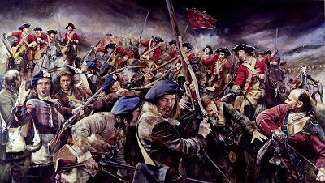

Tha mo dhùil, Tha mo dhùil
I will go, I will go - Te revoir, te revoir
A Gaelic song followed byAn English Text By Rody McMillan

Tune
Sequenced by Christian Souchon

|
I hope, I hope,
I hope to return to MacLeod's country* Where in my childhood I played. 1. I got a sharp steel sword, a belt around my middle to hold it in, a red uniform of Lowland cloth; there was no blemish on the lad. 2. We have received a letter from the King: We have to get ready quickly. We are leaving for France To fight there the French. 3. When they put us aboard in the best of order, every man told his girl: "Some of us will not return." 4. When they put us ashore among the spindrift and the bent grass, we fought a battle on the shore, and some of us remained there.* 5. He himself came, the son of the King; he was like one of us in the company. "Are these Gaels of the North? I had lost them and now I have found them all." 6. The French fled when they heard the drum, they took to the glen and have not faced us since. I hope, I hope, I hope to return to MacLeod's country* Where in my childhood I played. * MacLeod's country=the Isle of Skye Some of us remained there= were killed. |
Tha mo dhùil, tha mo dhùil,
Tha mo dhùil-sa ri tilleadh Dh'ionnsaigh dùthaich MhicLeòid Far an òg robh mi mire. 1. Fhuair mi claidheadh sgaiteach cruaidh Crios 'ga chumail suas mu m'mheadhon Deise dhearg a chlò nan Gall Cha robh meang anns a' ghille 2. Fhuair sinn litrichean o'n Rìgh Gus sinn fhìn dhèanamh ullamh; Gus a dhol anull dhan Fhraing, Gus am Frangach a thilleadh. 3. Nuair a chuir iad sinn air bòrd Anns an òrdan bu ghrinne Bha gach fear ri thè ag ràdh "Cha dèan pàirt againn tilleadh." 4. 'S nuair a chuir iad sinn air tìr A measg sìoban is muran Thug sinn batal air an tràigh 'S gun d'rinn pàirt againn fuireach. 5. Thàinig esan, mac an Rìgh 'S e mar aon dhìnn 'sa chuideachd "An iad so Gàidheil an Taobh Tuath? Bha iad bhuam 's fhuair mi uil' iad." 6. 'S theich na Frangaich gu luath Nuair a chual' iad an druma Theich iad a-mach ris a' ghleann 'S cha do sheall iad air gunna. Tha mo dhùil, tha mo dhùil Tha mo dhùil-sa ri tilleadh Dh'ionnsaigh dùthaich MhicLeòid Far an òg robh mi mire. |
Te revoir, te revoir!
C'est notre seule espérance. Cher pays de notre enfance Et des McLeod*, te revoir! 1. Avec sabre d'acier tranchant Et ceinturon pour l'y suspendre, J'ai passé sans faire d'esclandre L'habit rouge en drap des Lowlands. 2. Le Roi lui-même a demandé Par un écrit notre assistance; Il nous faut partir pour la France, Pour y combattre les Français. 3. Quand nous montâmes à bord En ordre, comme à l'exercice, Chacun a dit à sa promise "Puissions-nous nous revoir encor." 4. C'est au milieu des embruns Courbant l'herbe qu'ils débarquèrent. Le combat eut lieu sur la grève, La mort en a fauché plus d'un. 5. Comme s'il fût simple soldat, Le fils du Roi vint en personne: "Sont-ce là les Gaëls d'Ecosse Qu'on croyait perdus?...Ils sont là!" 6. Quand notre tambour retentit, Tous les Français deviennent blèmes. Les voilà qui fuient par les plaines Pour ne pas braver nos fusils. Te revoir, te revoir! C'est notre seule espérance. Cher pays de notre enfance Et des McLeod, te revoir! (Trad. Ch.Souchon (c) 2005) * Pays des McLeod=l'Ile de Skye |
|
The "King`s son" could be the Duke of Cumberland, who,
after he had defeated the Jacobite army at Culloden on 16th April 1746, remained in Scotland for only three months after the battle and was then sent back to the European theatre of war, although it is astonishing that after the bloody repression he had ordered, he should have gone wandering the highlands looking for new recruits.
Alternatively the song could allude to "the Old Pretender" - the father of "Bonnie" Charles Edward- who raised levies among Scottish (and Irish) Jacobites for service in France against the English "usurper." Of course, the verse referring to the French tends to fly against that. But this could be the consequence of multiple versions being circulated at one time and this, the "politically correct" one, being the one to have survived. It may be assumed that another version of the verse with the English army fleeing has existed at one time but has not survived. A third interpretation is that this song tells of Gaels engaged in fighting the French in Holland (1799). The author of the song is a certain "Leodach" (MacLeod) . |
Ce "fils du Roi" pourrait être le Duc de Cumberland, qui,
après avoir défait l'armée Jacobite à Culloden le 16 avril 1746, ne demeura en Ecosse que trois mois après la bataille avant d'être renvoyé sur le théatre d'opérations européen, bien qu'il soit étonnant qu'après la répression sanglante qu'il avait ordonnée, il ait pu parcourir les Highlands en quête de nouvelles recrues.
On peut tout aussi bien y voir une allusion au "Vieux Prétendant" - le père de Bonnie Charlie- qui leva des troupes parmi les Jacobites d'Ecosse (et d'Irlande) pour combattre en France l'"usurpateur" anglais." Il est vrai que le couplet à propos des Français tend à infirmer cette interprétation. Mais peut-être faut-il voir là la conséquence de l'existence simultanée de versions multiples dont la seule "politiquement correcte" aurait survécu. On peut supposer qu'une autre version de ce couplet prenant pour cible l'armée anglaise a existé à un moment avant de disparaître. Selon une troisième interpretation cet chant parle de Gaëls enrolés pourcombattre les Français en Hollande (1799). L'auteur du chant est un certain "Leodach" (MacLeod) . |
|
Based on this song is another song by Roddy MacMillan which seems to be as firmly entrenched in the Scottish Folk Tradition as its model. Roddy MacMillan was a well-known actor and a skilful songwriter and playwright.
'I Will Go' sums up the experiences of many Highland Scots who first followed Bonnie Prince Charlie calling out the clans to fight for his father, the Old Pretender. The second verse refers to the soldiers who, whilst engaged in the service of the King (hence the "Red Coat" and the "Shilling") were (third verse) being betrayed back home in Scotland as landowners pursued a policy of clearing the Glens of people to make way for sheep and hunting estates. It is unclear if the song implies a causal continuity between them.
|
Partant de ce chant, Roddy MacMillan a composé un autre texte qui semble s'être enraciné aussi solidement que son modèle dans la tradition populaire écossaise. Roddy MacMillan était un acteur connu qui fut aussi auteur de chansons et de piêces de théatre.
'J'y vais' résume la carrière d'un bon nombre de Montagnards écossais qui suivirent d'abord Bonnie Prince Charlie lorsqu'il fit appel aux Clans pour combattre pour son père, le Vieux Prétendant (premier couplet). Le second couplet se rapporte aux soldats qui, alors qu'ils servaient dans les armées du Roi (d'où la "Tunique Rouge" et le "shilling"), furent trahis dans leur pays par les propriétaires terriens qui poursuivaient une politique d'éviction pour dégager des pâtures à moutons et des terrains de chasse. On ne saurait dire si l'auteur sous-entend un lien de cause à effet entre ces éléments. |
|
I WILL GO
Roddy MacMillan 1. I will go, I will go, When the fighting is over To the land o' McLeod That I left tae be a soldier. I will go, I will go. 2. When the King's son came along He called us a' thegither, Saying, 'Brave Highland men, Will ye fight for my father?' I will go, I will go. 3. When we came back to the glen, The winter was turning, Our goods lay in the snow, And our houses were burning. I will go, I will go. 4. I've a buckle on my belt A sword in my scabbard A red coat on my back And a shilling in my pocket I will go, I will go. 5. When they put us all on board The lasses were singing But the tears came tae their eyes When the bells started ringing I will go, I will go. 6. When we landed on the shore And saw the foreign heather We knew that some would fall And would stay there for ever I will go, I will go.
|
J'Y VAIS, J'Y VAIS!
Roddy MacMillan 1. J'y vais, j'y vais, Dès que la bataille est finie Au pays des McLeod Que j'ai quitté pour être soldat. J'y vais, j'y vais! 2. Quand le fils du Roi vint à passer Il nous a tous réunis, Disant: "Braves Highlanders, Voulez-vous combattre pour mon père?" J'y vais, j'y vais! 3. Quand nous revînmes dans nos vallées, C'était en plein hiver, Nos biens étaient éparpillés sur la neige, Et nos maisons la proie des flammes. J'y vais, j'y vais! 4. J'ai une boucle à mon ceinturon Une épée dans son fourreau Une tunique rouge sur le dos Et un shilling dans ma poche J'y vais, j'y vais! 5. Quand on nous fit monter à bord, Les filles chantaient; Mais elles se mirent à pleurer Quand les cloches se firent entendre. J'y vais, j'y vais! 6. Lorsque nous descendîmes à terre Et que nous vîmes la lande étrangère Nous sûmes que plus d'un tomberait Pour ne jamais plus revenir. J'y vais, j'y vais! |
The "Corries" sing "I will go"